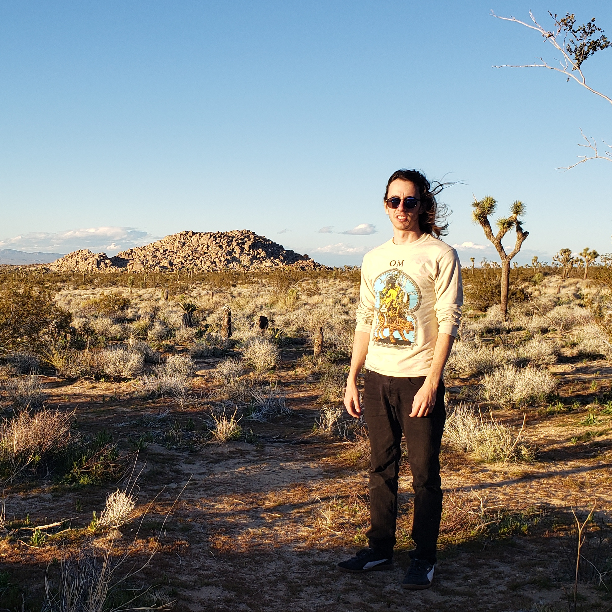

I'm a 5th year graduate student and Ph.D. candidate at UC Riverside working with Dr. Laura Sales on computational galaxy formation. I am interested in Local Group cosmology, including ΛCDM and the origin of the LMC & its satellites. I work with the Feedback In Realistic Environments (FIRE) simulations project, as well as with AREPO/SMUGGLE. You can find my publications on ADS by clicking here, or you can find more info about my research at the tab above.
I am also very interested in issues related to diversity and inclusivity, both in STEM academia and more broadly, leading to my work with the Physics Organization for Womxn and the Under-Represented (POWUR), of which I am currently president.
As you can tell from the photos here, I also enjoy spending time outdoors, particularly in Joshua Tree National Park.
Find me in 2109 Pierce Hall, UCR or email me: ethan.jahn {at} email.ucr.edu